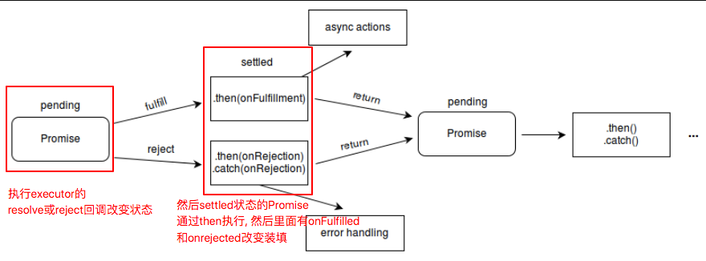
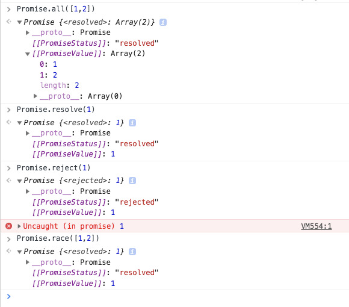
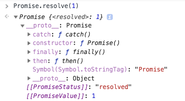

Promise是什么,使用Promise
先看 async 和 await 吧,然后混入 promise
从Promise对象的方法和原型的方法上的返回和传入参数看
Promise 是什么, 主要介绍 Promise构造函数
Promise 对象用于表示一个异步操作的最终状态（完成或失败），以及其返回的值。
具体描述看下面
下面主要内容是 Promise构造函数, 构造函数主要是用来包装还未支持promise的函数
1 | var promise1 = new Promise(function(resolve, reject) { |
创建Promise
Promise对象是由关键字 new 及其构造函数来创建的。该构造函数会?把一个叫做“处理器函数”（executor function）的函数作为它的参数。这个“处理器函数”接受两个函数——resolve 和 reject ——作为其参数。当异步任务顺利完成且返回结果值时(异步操作在executor内)，会调用 resolve 函数；而当异步任务失败且返回失败原因（通常是一个错误对象）时，会调用reject 函数。
语法
1 | new Promise( function(resolve, reject) {...} /* executor */ ); |
参数就是一个 function(resolve, reject) {...} 这个executor
executor是带有 resolve 和 reject 两个参数的函数 。这两个参数也是函数. (回调函数哦)
Promise构造函数执行时立即调用 executor 函数（ executor 函数在Promise构造函数返回新建对象前被调用）， resolve 和 reject 两个函数作为参数传递给 executor。executor 内部通常会执行一些异步操作，
一旦完成，可以调用 resolve 函数来将 promise 状态改成 fulfilled，或者在发生错误时调用reject函数将它的状态改为 rejected。 从这里知道, Promise的状态是通过回调函数resolve和reject改的
即:resolve 和 reject 函数被调用时，分别将 promise 的状态改为 fulfilled（完成）或 rejected（失败）。
如果在 executor 函数中抛出一个错误，那么该 promise 状态为 rejected 。 executor 函数的返回值被忽略。
resolve函数的作用是，将Promise对象的状态从“未完成”变为“成功”（即从 pending 变为resolved），在异步操作成功时调用，并将异步操作的结果，作为参数传递出去；
reject函数的作用是，将Promise对象的状态从“未完成”变为“失败”（即从 pending 变为rejected）， 在异步操作失败时调用，并将异步操作报出的错误，作为参数传递出去。
描述
Promise 对象是一个代理对象（代理一个值），被代理的值在 Promise 对象创建时可能是未知的(比如可以是一个异步的操作,也可以直接是一个确定的值, 总之都用Promise包起来)。
它允许你为异步操作的成功和失败分别绑定相应的处理方法（handlers）。 这让异步方法可以像同步方法那样返回值，但并不是立即返回最终执行结果，而是一个能代表未来出现的结果的 promise 对象
一个 Promise 有以下3种状态: Promise的状态是通过回调函数resolve和reject改的
pending: 初始状态，既不是成功，也不是失败状态。fulfilled: 意味着操作成功完成。对应从调用resolve函数rejected: 意味着操作失败。 对应从调用reject函数
注意： 如果一个promise对象处在fulfilled或rejected状态而不是pending状态，那么它也可以被称为
settled状态。
pending 状态的 Promise 对象可能触发 fulfilled 状态并传递一个值给相应的状态处理方法 resolve ，也可能触发失败状态（rejected）并传递失败信息给 reject方法 。
从这里看出, 先是执行第一个
Promise对象,然后触发回调的方法resolvereject, 产生一个新的Promise对象.
然后👇下面是Promise对象原型上的方法来处理(就会被触发调用),用到thencatch
当其中任一种情况出现时，Promise 对象的 then 方法(这个方法是在Promise的原型上的, 并返回一个Promise对象)绑定的处理方法（handlers ）就会被调用
（ then 方法包含两个参数,也都是函数：onfulfilled 和 onrejected，它们都是 Function 类型。当 Promise 状态为 fulfilled 时，调用 then 的 onfulfilled 方法，当 Promise 状态为 rejected 时，调用 then 的 onrejected 方法， 所以在异步操作的完成和绑定处理方法之间不存在竞争）。
这里搞懂, 第一个
Promise通过执行executor的回调函数resolvereject变为相应的fulfilled或rejected状态, 返回一个新的Promise对象.
然后then方法根据返回的新的Promise对象的状态, 调用相应的onfulfilled或onrejected方法.
所以状态是3种, Promise的回调函数2种, then方法的回调也是2种
pending fulfilled rejectedresolve rejectonfulfilled onrejected
平时见到的 then和 catch 可以链式调用的原因是因为 Promise.prototype.then 和 Promise.prototype.catch 方法返回 promise 对象
注意:
then方法是在Promise对象的原型上prototype的,Promise对象本身就4个方法resolverejectallrace
原型上3个thencatchfinally

属性和方法(上面涉及了Promise的方法和Promise原型上的方法, 具体介绍下)
看完方法和原型的返回, 在回顾去看下描述就更好
属性 不常用 2个
Promise.length length属性，其值总是为 1 (构造器参数的数目).
Promise.prototype 表示 Promise 构造器的原型.
方法和原型
Promise的方法 4个, 都返回Promise对象
Promise.resolve(value): 返回一个状态由给定value决定的Promise对象。
如果该value是一个Promise对象，则直接返回该Promise对象；
如果该值是thenable(即，带有then方法的对象)，返回的Promise对象的最终状态由then方法执行决定；(注意: 应该是Promise.resolve方法会将这个对象转为Promise对象，然后就立即执行thenable对象的then方法。)1
2
3
4
5
6
7
8
9
10
11// 这是一个滴啊有then方法的对象, 所以
let thenable = {
then: function(resolve, reject) {
resolve(42);
}
};
let p1 = Promise.resolve(thenable); // 这里先包装thenable
p1.then(function(value) { // 这里执行, 最终结果.
console.log(value); // 42
});
否则的话(该value为空，基本类型或者不带then方法的对象),返回的Promise对象状态为fulfilled，并且将该value传递给对应的then方法。
通常而言，如果你不知道一个值是否是Promise对象，使用Promise.resolve(value) 来返回一个Promise对象,这样就能将该value以Promise对象形式使用。
Promise.reject(reason): 返回一个状态为失败的Promise对象，并将给定的失败信息reason传递给对应的处理方法catch住.(实际上只是then(null, ...)的语法糖)Promise.all(iterable): 这个方法返回一个新的promise对象(成功对应返回resolve一个Promise包装的所有成功value的数组, 失败就返回reject第一个失败的那个的reason信息)，该promise对象在iterable参数对象里(不是说是数组,而是说要具有iterable接口)所有的promise对象都成功的时候才会触发成功，一旦有任何一个iterable里面的promise对象失败则立即触发该promise对象的失败。这个
新的promise对象在触发成功状态以后，会把一个包含iterable里所有promise返回值的数组作为成功回调的返回值，顺序跟iterable的顺序保持一致；如果这个新的promise对象触发了失败状态，它会把iterable里第一个触发失败的promise对象的错误信息作为它的失败错误信息。Promise.all方法常被用于处理多个promise对象的状态集合。Promise.race(iterable): 当iterable参数里的任意一个子promise被成功或失败后(就是看最快的那个,all相当于是看最慢的)，父promise马上也会用子promise的成功返回值或失败详情作为参数调用父promise绑定的相应句柄，并返回该promise对象。(注意:Promise.race在第一个promise对象变为Fulfilled之后，并不会取消其他promise对象的执行。)

Promise原型, 1个属性, 3个方法
属性就是原型都有的romise.prototype.constructor 返回被创建的实例函数. 默认为 Promise 函数
方法就是常见的3个, then catch finally
Promise.prototype.then(onFulfilled, onRejected): 添加解决(fulfillment)和拒绝(rejection)回调到当前promise, 返回一个新的 promise, 将以回调的返回值来resolve. (catch只是then的一个特例)Promise.prototype.catch(onRejected): 添加一个拒绝(rejection) 回调到当前promise, 返回一个新的promise。当这个回调函数被调用，新 promise将以它的返回值来resolve，否则如果当前promise进入fulfilled状态，则以当前promise的完成结果作为新promise的完成结果.注意这个也是返回一个Promise, 当成then只有第2个参数时呗Promise.prototype.finally(onFinally): 添加一个事件处理回调于当前promise对象，并且在原promise对象解析完毕后，返回一个新的promise对象。回调会在当前promise运行完毕后被调用，无论当前promise的状态是完成(fulfilled)还是失败(rejected)

关于Symbol(Symbol.toStringTag): "Promise"的知识, 看Symbol.toStringTag
总结 : 看你真的完全掌握了promise么？
Promise 对象用于表示一个异步操作的最终状态（完成或失败），以及其返回的值。
Promise编程的核心思想是如果数据就绪(settled)，那么(then)做点什么。
Promise构造函数接受一个函数作为参数，该函数的两个参数分别是resolve和reject。
1 | const promise = new Promise(function(resolve, reject) { |
resolve函数的作用是，将Promise对象的状态从“未完成”变为“成功”（即从pending变为fulfilled），在异步操作成功时调用，并将异步操作的结果，作为参数传递出去；reject函数的作用是，将Promise对象的状态从“未完成”变为“失败”（即从pending变为rejected）， 在异步操作失败时调用，并将异步操作报出的错误，作为参数传递出去。
Promise实例生成以后，可以用then方法分别指定resolved状态和rejected状态的回调函数。
1 | promise.then(function(value) { |
立即resolve的 Promise 对象，是在本轮“事件循环”（event loop）的结束时，而不是在下一轮“事件循环”的开始时。
1 | setTimeout(function () { |
上面代码中，setTimeout(fn, 0)在下一轮“事件循环”开始时执行，Promise. resolve()在本轮“事件循环”结束时执行，console.log('one')则是立即执行，因此最先输出。
特别说明：如果需要resolve()往后传递多个参数，不能直接写resolve(a1,a2,a3)，这样只能拿到第一个要传的参数，需要以数组或对象去传递
1 | let obj = {a1:a1,a2:a2,a3:a3}; |
Promise的链还停不了诶1
2// 这里是返回一个pending状态的Promise
new Promise(function(){})
虽然上面可以停住, 但会导致内存泄漏,毕竟一直停住了, 不释放内存.